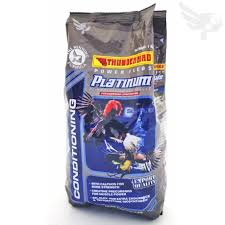

| 💎 PLATINUM POULTRY FEEDS 💎 |
|  |
PLATINUM 💰 Price: ₱62 per kilo 📌 Description: PLATINUM is a premium poultry feed formulated to enhance growth, stamina, and overall health of your chickens. Ideal for farmers aiming for strong and healthy flocks. ✅ Key Benefits: - Supports rapid growth and development - Improves feather quality and strength - Boosts energy and immunity - Perfect for daily feeding - Suitable for broilers and native chickens 🐔 Best For: Broilers, native chickens, and laying hens 🕒 Feeding Guide: Feed daily with clean water. Adjust portions according to age and size of your birds. |